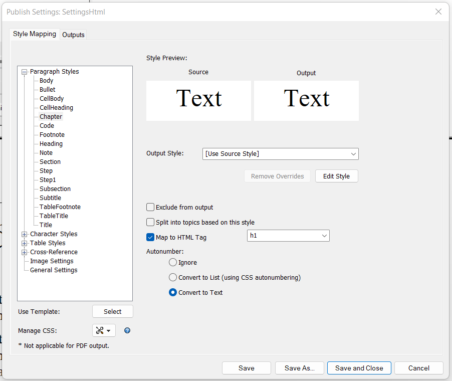
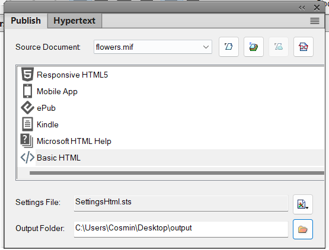
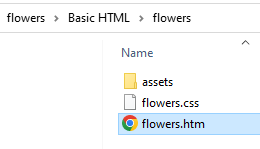
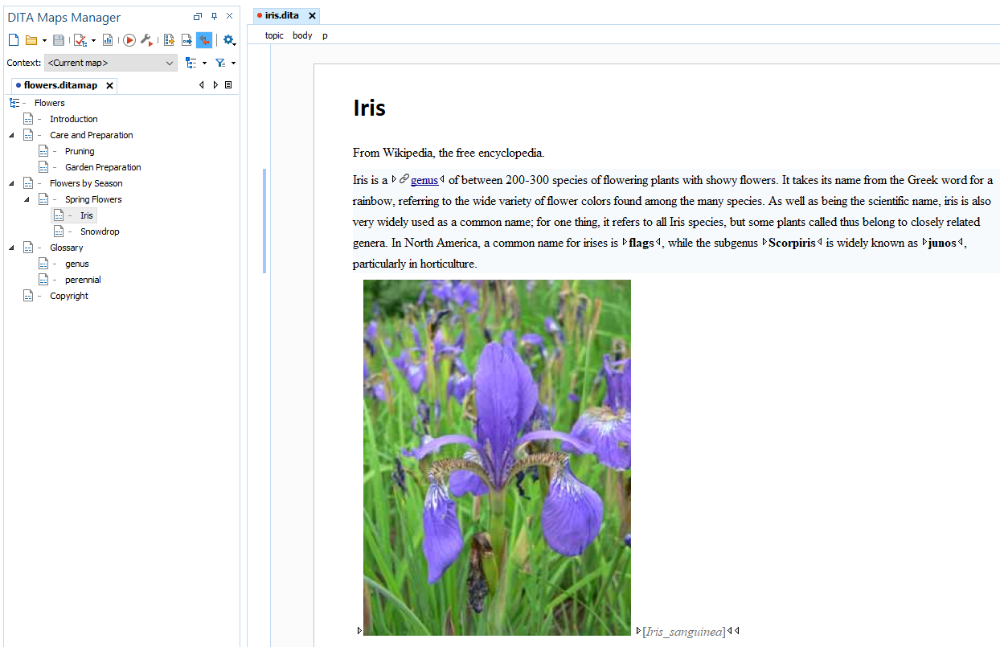

Migrating Unstructured Adobe FrameMaker Content to DITA
This article explores ways to convert unstructured FrameMaker documents to a DITA XML project.
Using a FrameMaker Plugin
There is a FrameMaker plugin that can be used for this type of conversion: http://leximation.com/tools/info/fm2dita.php.
Using FrameMaker Conversion Table
FrameMaker has a "Conversion Table" feature that can be used for this type of conversion: https://help.adobe.com/en_US/framemaker/using/using-framemaker/user-guide/WSB3FD6CD7-6930-474f-BB1E-64762D105DB6_ver12.0.html.
Unstructured FrameMaker to HTML to DITA
To perform this migration, your documents must be in the ".mif" format.
If your documents are in the '.fm' format, you can use the MIF Wash Utility to convert your book into a .mif document: https://helpx.adobe.com/framemaker/kb/how-to-use-mifwash-utility-in-framemaker.html.
- Publish Your Unstructured FrameMaker to HTML
-
In this step, the mif document is converted to HTML using the Basic HTML scenario from FrameMaker. Here are the substeps:
- Create a settings file for publishing that contains mappings
to HTML elements for all paragraph and character
styles:

It's very important to have mappings to HTML heading elements for paragraph styles that mark headings in your document. In the example above, the "Chapter", "Heading", and "Title" styles are mapped to the "h1" element, the "Subtitle" and "Section" styles to the 'h2' element, and the "Subsection" style to the 'h3' element.
The styles set on the list should be mapped to the 'li' elements. In the example, it's the "Bullet", "Step", and "Step1" styles.
The paragraph styles without mapping are converted to HTML paragraphs, so you can skip the ones where the mapping is not necessary. The "Body", "CellBody", and "CellHeading" styles don't have a mapping in the example above.
- Publish the 'mif' document to HTML using
Basic HTML:

This should result in an '.htm' document located in the output directory:

- Create a settings file for publishing that contains mappings
to HTML elements for all paragraph and character
styles:
- Correct the Resulting HTML Using a Custom Refactoring Operation
- The HTML document that results from publishing requires some extra processing before applying the DITA conversion.
- Convert HTML to DITA Using the Oxygen Batch Documents Converter Add-on
- The Batch Documents Converter add-on has to be installed in Oxygen for this step. Follow the installation procedure here.

Note that migration from proprietary formats to XML is never perfect and manual
changes need to be made. The names of the original styles are preserved on the
@ouputclass attributes and these can be used for adding extra
processing using refactoring operations.
Adobe and FrameMaker are either registered trademarks or trademarks of Adobe in the United States and/or other countries.